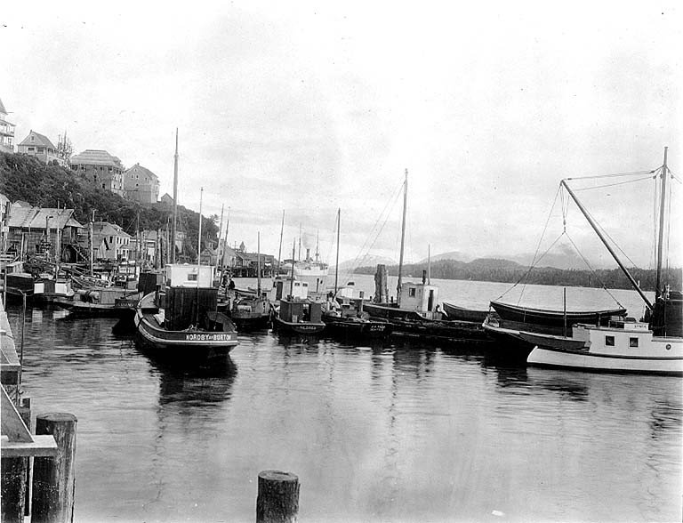
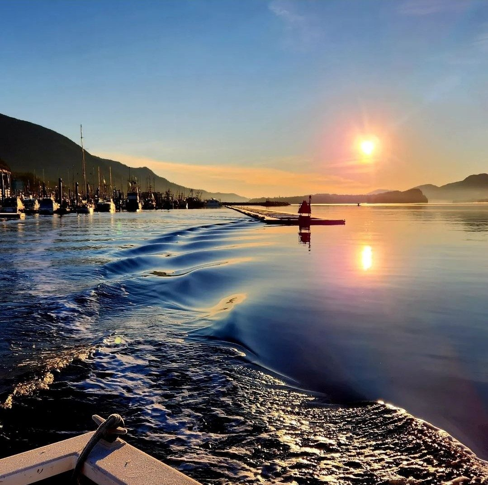

Directory / Southeast Alaska / Ketchikan, AK
Ketchikan tides — Tongass Narrows, Bar Harbor, Thomas Basin & Knudson Cove
High and low tides for the coming week from NOAA station 9450460 (Ketchikan, Tongass Narrows — 55.3319, -131.6261). Times are local (AKST/AKDT). Heights are feet above Mean Lower Low Water (MLLW). Ketchikan is the first Alaska port most boats reach heading north from British Columbia, and it calls itself the Salmon Capital of the World. The whole town is strung along Tongass Narrows. The City of Ketchikan runs Bar Harbor (North and South), Thomas Basin, Casey Moran (the old City Float), Hole-in-the-Wall, and Knudson Cove, plus the downtown cruise berths. The Narrows is also a runway: floatplanes land and take off among the boats all day.
7 knots, big tides 7 knots in the Narrows, big tides & the city grids
amp; the city grids
Speed limit. Federal rule 33 CFR 162.240 caps speed at 7 knots through the developed part of Tongass Narrows. The zone runs from Tongass Narrows Buoy 9 in the north to the East Channel and West Channel regulatory markers in the south. The rule exempts law enforcement and emergency boats, vessels 23 ft registered length or less, and floatplanes during landings and take-offs. Keep a lookout aft and overhead, and stay well clear of a plane on its run.
The big swing. In the NOAA predictions fetched 2026-11-14, the largest swing in the next five weeks is on Wednesday, November 25, 2026: a 19.0 ft high at 12:28 PM, then a −3.6 ft low at 7:08 PM. That is a drop of about 22.6 ft in under seven hours. Minus tides come every evening from Nov 22 through Nov 29, and again from Dec 6 through Dec 11. All of them fall after dark this time of year (sunset is about 3:40 PM in mid-November). For scale, Mean Higher High Water at this station is 15.4 ft above MLLW.
Using the grids. The city has tidal grids at Thomas Basin (vessels up to 100 tons) and Bar Harbor. Grids, the two cranes, and the drive-down ramp are by reservation through the Harbormaster (907-228-5632). The harbor booklet lists the grid at $2.45 per foot per 24 hours. Daylight low tides are scarce in winter. The best daylight lows in the next five weeks are about 2.2 ft at 3:28 PM on Fri Nov 20, 2.5 ft at 2:50 PM on Thu Dec 3, and 1.3 ft at 3:45 PM on Fri Dec 4. Each one is close to sunset. For bigger jobs, the state-owned Ketchikan Shipyard has been run by JAG Ketchikan since September 2025 (it was run by Vigor before that). The city’s list of private boatyards is in the directory below.
Arriving from Canada. The city’s harbor booklet says U.S. Customs (907-225-2254) will meet you at your slip or at the fuel dock. Call the Harbormaster on VHF 73 (preferred) or 16 when you arrive, then register at the office above Bar Harbor North.
Weather. Tongass Narrows falls inside NWS zone PKZ036 Clarence Strait. The outside coast from Dixon Entrance north is PKZ641 (Dixon Entrance to Cape Decision, out to 15 NM). In the forecast issued 6:08 PM AKST Sat Nov 14, 2026, both zones carried a Gale Warning. Clarence Strait called for SE 40 kt with gusts to 55 kt and 15 ft seas on Sunday, and the outside coast for 18–19 ft seas Sunday and Sunday night. Check both zones below before you leave the harbor.
Computed from NOAA CO-OPS hi/lo predictions for 9450460 (2026-11-15 through 2026-12-20) and station datums (1983–2001 epoch), the NWS coastal waters forecast text, the eCFR, and City of Ketchikan Port & Harbors pages and the harbor booklet, all fetched 2026-11-14 AKST. Not for navigation.
Ketchikan then & now
Historic

.jpeg){kind=link}
Current

.jpg){kind=link}
Official NOAA predictions Station home NOAA chart viewer View on Windy
Port Sponsor — Ketchikan, AK
Top placement for fuel docks, marinas, yards, and marine businesses.
$25–$50 / month
Sunday, November 15, 2026
| Tide | Time (local) | Height (MLLW) |
|---|---|---|
| High | 4:30 AM | 11.9 ft |
| Low | 9:51 AM | 6.6 ft |
| High | 3:46 PM | 13.1 ft |
| Low | 10:36 PM | 2.6 ft |
Monday, November 16, 2026
| Tide | Time (local) | Height (MLLW) |
|---|---|---|
| High | 5:28 AM | 11.7 ft |
| Low | 10:58 AM | 6.9 ft |
| High | 4:46 PM | 12.1 ft |
| Low | 11:34 PM | 3.1 ft |
Tuesday, November 17, 2026
| Tide | Time (local) | Height (MLLW) |
|---|---|---|
| High | 6:31 AM | 11.9 ft |
| Low | 12:21 PM | 6.6 ft |
| High | 6:02 PM | 11.5 ft |
Wednesday, November 18, 2026
| Tide | Time (local) | Height (MLLW) |
|---|---|---|
| Low | 12:37 AM | 3.4 ft |
| High | 7:29 AM | 12.5 ft |
| Low | 1:37 PM | 5.5 ft |
| High | 7:21 PM | 11.5 ft |
Thursday, November 19, 2026
| Tide | Time (local) | Height (MLLW) |
|---|---|---|
| Low | 1:37 AM | 3.5 ft |
| High | 8:18 AM | 13.5 ft |
| Low | 2:38 PM | 4.0 ft |
| High | 8:32 PM | 12.0 ft |
Friday, November 20, 2026
| Tide | Time (local) | Height (MLLW) |
|---|---|---|
| Low | 2:31 AM | 3.4 ft |
| High | 9:00 AM | 14.6 ft |
| Low | 3:28 PM | 2.2 ft |
| High | 9:32 PM | 12.8 ft |
Saturday, November 21, 2026
| Tide | Time (local) | Height (MLLW) |
|---|---|---|
| Low | 3:19 AM | 3.3 ft |
| High | 9:40 AM | 15.9 ft |
| Low | 4:13 PM | 0.4 ft |
| High | 10:25 PM | 13.7 ft |
Sunday, November 22, 2026
| Tide | Time (local) | Height (MLLW) |
|---|---|---|
| Low | 4:05 AM | 3.1 ft |
| High | 10:20 AM | 17.0 ft |
| Low | 4:56 PM | -1.2 ft |
| High | 11:14 PM | 14.6 ft |
Tide data: NOAA CO-OPS station 9450460, predictions (hi/lo, MLLW, local standard/daylight time). Refreshed with each nightly build; the marine-weather snapshot time below shows the latest fetch. Currents: the nearest NOAA current station in our port list is PCT2786 (about 0.7 km away) — see NOAA current predictions.
Marine weather & cameras
NWS marine forecast — Clarence Strait (PKZ036)
Issued 608 PM AKST Sat Nov 14 2026. Snapshot fetched 2026-11-14 21:24 AKST from NWS text product. Official zone forecast · Raw text
...GALE WARNING THROUGH LATE SUNDAY...
- .REST OF TONIGHT...E wind 30 kt becoming SE 45 kt late. Seas 9 ft building to 14 ft. Rain.
- .SUN...SE wind 40 kt. Gusts to 55 kt, except 45 kt out of interior passes. Seas 15 ft. Rain in the afternoon.
- .SUN NIGHT...S gale to 35 kt. Gusts to 45 kt out of interior passes. Seas 15 ft. Rain.
- .MON...S wind 30 kt. Gusts to 45 kt. Seas 11 ft, except 14 ft near ocean entrances. Rain.
- .MON NIGHT...SE gale to 35 kt. Gusts to 50 kt. Seas 10 ft, except 13 ft near ocean entrances. Rain.
- .TUE...SE gale to 35 kt. Seas 9 ft.
- .WED...SE wind 10 kt. Seas 4 ft.
- .THU...SE gale to 40 kt. Seas 5 ft.
NWS marine forecast — Dixon Entrance to Cape Decision out to 15 NM (PKZ641)
Issued 607 PM AKST Sat Nov 14 2026. Snapshot fetched 2026-11-14 21:24 AKST from NWS text product. Official zone forecast · Raw text
...GALE WARNING THROUGH SUNDAY...
- .REST OF TONIGHT...SE wind 35 kt. Seas 14 ft. Rain.
- .SUN...SE wind 40 kt. Seas 18 ft. Rain in the afternoon.
- .SUN NIGHT...SW wind 30 kt. Seas 19 ft. Rain.
- .MON...S wind 30 kt. Seas 17 ft. Rain.
- .MON NIGHT...SE wind 30 kt. Seas 14 ft. Rain.
- .TUE...SE gale to 35 kt. Seas 16 ft.
- .WED...SE wind 15 kt. Seas 13 ft.
- .THU...SE gale to 35 kt. Seas 6 ft.
Nearby NDBC observation — Ketchikan (KECA2, NOAA 9450460)
wind 80°, 8 kt, gust 21 kt, 980.9 hPa
Observation time 2026-11-14 20:48 AKST (converted to AKST). Attribution: NOAA NDBC station KECA2. Snapshot fetched 2026-11-14 21:24 AKST.
Nearby NDBC observation — Guard Island (GIXA2, Marine Exchange of Alaska, north end of Tongass Narrows)
wind 60°, 3 kt, gust 7 kt, air 54°F, 979.4 hPa
Observation time 2026-11-14 21:02 AKST (converted to AKST). Attribution: NOAA NDBC station GIXA2. Snapshot fetched 2026-11-14 21:24 AKST.
Nearby NDBC observation — Mary Island (MRYA2, Marine Exchange of Alaska, Revillagigedo Channel)
wind 150°, 7 kt, gust 16 kt, air 53°F, 980.9 hPa
Observation time 2026-11-14 21:02 AKST (converted to AKST). Attribution: NOAA NDBC station MRYA2. Snapshot fetched 2026-11-14 21:24 AKST.
Harbor webcams
- FAA WeatherCams — Ketchikan International Airport (PAKT) (four views from the airport on Gravina Island across Tongass Narrows toward town; link only, not embedded)
- FAA WeatherCams — Point Higgins (four views at the north end of the Narrows toward Clarence Strait and Guard Island, near Knudson Cove; link only)
- FAA WeatherCams — Clover Pass (west and north views, north of town; link only)
- FAA WeatherCams — Twin Island (four views over Revillagigedo Channel toward Dixon Entrance; link only)
FAA’s public site list showed all four sites active, with fresh images from every camera, on 2026-11-14 around 9:15 PM AKST. Expect dark frames on winter nights. Ketchikan Public Utilities’ KPU Ketchikan Webcam page says a new camera system is being installed and showed only a still photo of the cruise berths when we checked. We did not find a free public camera aimed at the harbor floats. Harbor businesses with a public cam: email us and we will link it.
Ketchikan boater notes (official links)
- City of Ketchikan Port & Harbors. Harbormaster office at Bar Harbor North, 2933 Tongass Ave: 907-228-5632, ktnharbors@ketchikan.gov, VHF 73 (preferred) or 16. Per the city, harbormasters are on duty 8 a.m. to 5 p.m. October through April, and 6 a.m. to 10 p.m. May through September. There are public restrooms and coin-op showers ($2 for 8 minutes) in the office building.
- Harbor maps, open-moorage registration, and rates (rates effective April 1, 2026). Open-moorage permits must be prepaid. Do not plug into power without the Harbormaster’s OK, because most meters belong to stallholders.
- Welcome to Ketchikan Harbors booklet (PDF): pump-outs at Casey Moran, Bar Harbor North and South, and Thomas Basin; free net/gear float at Bar Harbor North; grid, crane, and ramp fees; and the city’s marine industries directory, which we used for the listings below.
- Emergency numbers from the booklet: dial 911. USCG Command Center 907-463-2000; USCG Station Ketchikan 907-228-0340; Ketchikan Police 907-225-6631.
- 33 CFR 162.240 — Tongass Narrows navigation rule (7-knot limit and no-obstruction rule).
- Alaska Marine Highway and the city transportation page (Inter-Island Ferry to Prince of Wales, airport ferry, floatplane operators, and taxis).
- ADF&G Ketchikan Management Area (sport fishing) and Southeast commercial fisheries — emergency orders and openers.
- NOAA ENC chart viewer for Tongass Narrows, Revillagigedo Channel, and Clarence Strait. We link to NOAA’s viewer and do not host charts.
Local marine & shore directory
Verified public listings only. List free · Get featured
Marine services
Moorage & marinas
Seafood processors & buyers
Fuel docks
Shipyards & haul-outs
Boat repair & mechanics
Marine suppliers & chandleries
Electronics sales & installation
Welding & fabrication
Canvas & upholstery
Surveyors
Towing & salvage
Ice & bait
Fishing charters
Ashore for boaters
Groceries & provisioning
Hardware
Liquor stores
Laundromats
Showers
Lodging
Restaurants
Medical clinics
Pharmacies
Post office & shipping
Airport & floatplane
Propane
Auto & truck rental
We checked these listings on 2026-11-14 against public sources. Most come from the City of Ketchikan Port & Harbors pages and its Welcome to Ketchikan Harbors booklet (marine industries directory, fuel docks, and local numbers) and the city transportation page. Seafood processors come from the ADF&G 2025 Southeast shore-based processor registrations (Silver Bay, E.C. Phillips, Alaska General Seafoods, Ketchikan Sam’s, RS Seafood Trading) and NOAA Fisheries’ 2025 federal processor permit list (Gateway Seafood & Smokehouse, Fish From Trish). We also used AIDEA’s Ketchikan Shipyard page, the NPI registry for the pharmacy, and each business’s own site where it has one. Trident Seafoods sold its Ketchikan plant to Silver Bay in 2024, and JAG Ketchikan replaced Vigor at the shipyard in 2025, so we list the current operators. Some processor lines are seasonal. The city says its list is a courtesy, not an endorsement, and so is ours. Basic listings are free; a Featured listing is $10/month or $100/year. For corrections or a free listing, contact J.L. Miller at pacifictides.ak@gmail.com (email only).
Local news — Ketchikan, AK
Plain links to local outlets. Always check the source for the latest. Local news partners welcome.
Free weekly tides & marine weather
Get a short email for your port. We do not sell your email. Privacy.
Mailing list powered by Buttondown.
Boating gear on Amazon
As an Amazon Associate I earn from qualifying purchases.
Helpful search links for common gear. Prices and availability are on Amazon.
Other Alaska ports
Sources
- NOAA CO-OPS station 9450460 — Ketchikan (MDAPI name Ketchikan; lat 55.3319, lng -131.6261; verified 2026-11-14). Datums (1983–2001 epoch): MHHW is 15.45 ft and MHW is 14.54 ft above MLLW.
- Nearby currents reference: PCT2786 (not plotted on this page)
- Predictions API:
api.tidesandcurrents.noaa.gov/api/prod/datagetter(product=predictions, interval=hilo, datum=MLLW, time_zone=lst_ldt) - NWS Juneau coastal waters forecast zones PKZ036 Clarence Strait (contains Tongass Narrows per the api.weather.gov zone lookup) and PKZ641 Dixon Entrance to Cape Decision out to 15 NM
- NDBC observations: KECA2 Ketchikan (NOAA 9450460), GIXA2 Guard Island, MRYA2 Mary Island
- City of Ketchikan Port & Harbors: overview, harbors, contacts, harbor location pages, and the harbor booklet (checked 2026-11-14)
- eCFR 33 CFR 162.240
- ADF&G 2025 Southeast Alaska shore-based processors by port; NOAA Fisheries 2025 federal processor permits
- AIDEA Ketchikan Shipyard
- Directory:
data/businesses.csvrows for port_slug=ketchikan, each with its public source URL (verified 2026-11-14) - Photos: John N. Cobb / University of Washington Libraries (public domain); USDA Forest Service, Luke Duvall (public domain) via Wikimedia Commons. Graphics: original Pacific Tides artwork.